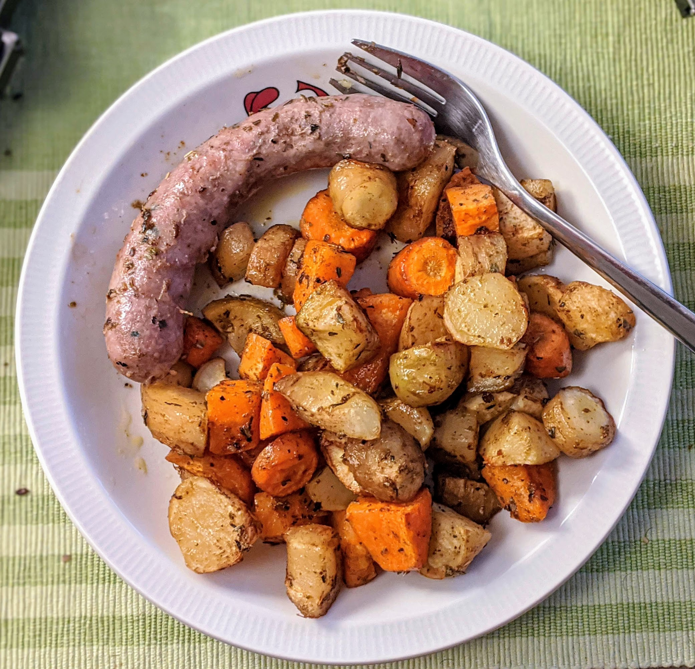
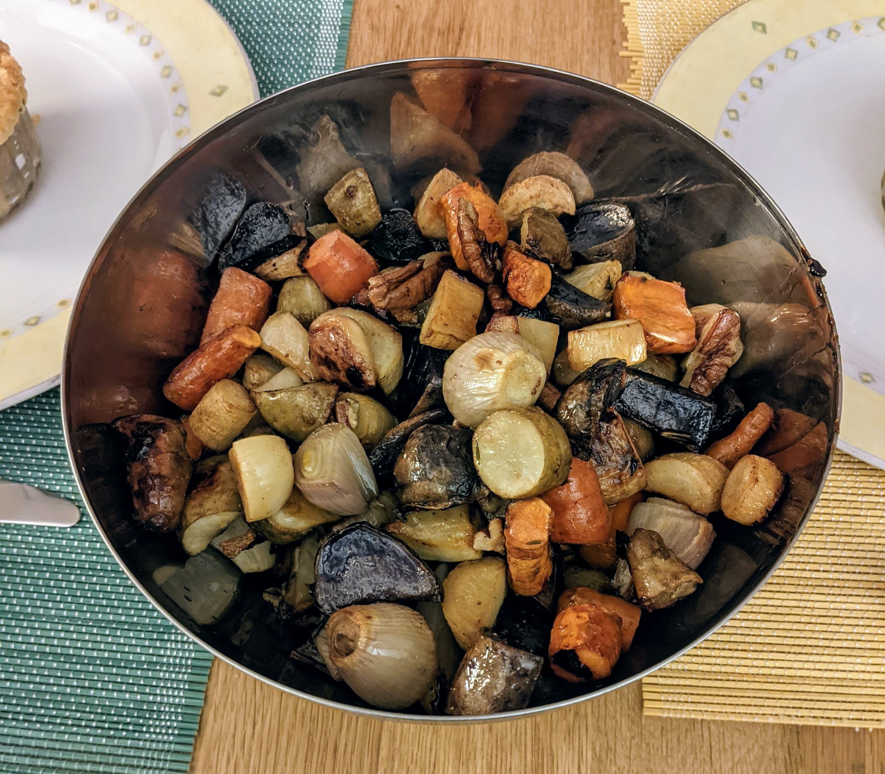

Légumes rôtis

Pour 5 personnes :
- Carottes
- Patates
- Patates douces
- Oignons
- Potimarron
- Panais
- Topinambour
- Bref, n'importe quel légume d'automne allant au four, pour un total d'environ 2kg.
- Des herbes, par exemple du thym, du romarin, des herbes de Provence…
- Des épices, par exemple du paprika, du cumin, du piment de Cayenne…
- (facultatif) Un verre de vin blanc sec
- Sel, poivre, bonne huile d'olive
- Préchauffer le four à 200°C. Bien laver les légumes, éplucher ceux que t'as envie d'éplucher (typiquement, rien sauf le potimarron), les couper en gros bouts.
- Tout mettre dans un saladier, avec les herbes, les épices, et de l'huile d'olive. Mélanger.
- Disposer ça sur une plaque de cuisson recouverte de papier sulfurisé, enfourner une quarantaine de minutes, servir dans la saladier précédemment utilisé.
Variante : pour une version de Thanksgiving, on peut faire une sauce avec une moitié de sirop d'érable et une moitié d'huile d'olive, faire mariner des noix de pécan dans la sauce quelques minutes, puis utiliser la sauce sur les légumes et réserver les noix pendant la cuisson, en ne les rajoutant que 5 minutes avant la fin.
